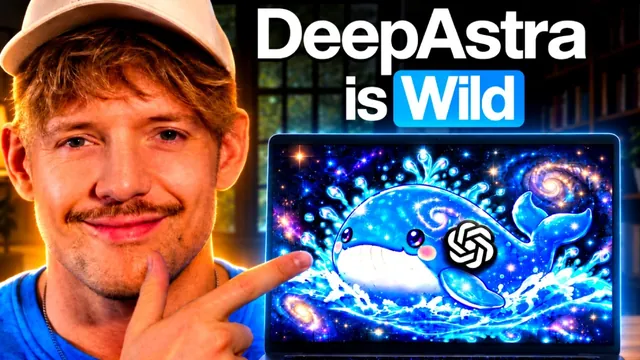

GPT-6 Astra에 DeepSeek을 붙였다 (비용 100분의 1)

원본 영상 보기 →
- "프론티어 모델 vs 워크호스 모델" 이원화 전략
- "기존 것을 유지·보완"과 "처음부터 새로 만들기"는 전혀 다른 난이도
- 구독 한도에 도달했을 때의 대안이 생긴다
한 줄 요약
Jack이 신규 오픈소스 모델 DeepSeek V4.1을 GPT-6 Astra와 실제로 엮어서(코드명 "Deep Astra") 프레젠테이션 디자인, 5만 행 데이터 분석, 대시보드 재설계까지 직접 테스트한 결과, DeepSeek이 벤치마크에서 크게 도약했고 Astra보다 훨씬 저렴한 "워크호스" 모델로 쓸 수 있다는 결론을 내린다.
전체 내용 정리
DeepSeek V4.1, 벤치마크에서 크게 도약했다
DeepSeek의 신규 모델 V4.1은 오픈 웨이트(open weights)이며 백만 토큰 컨텍스트를 지원하고 누구나 접근할 수 있다. 멀티스텝 자동화 작업 수행 능력을 보는 오토메이션 벤치(Automation Bench)에서 이전 버전 V4가 37.7점이었던 데 비해 V4.1은 54.8점으로 뛰어올랐고, Opus 5와 GPT-5.6 Sol에 견줄 만한 수준까지 올라왔다. 코드베이스 내 소프트웨어 엔지니어링 작업 해결 능력을 보는 벤치마크에서는 74.2%를 기록해 Opus 5를 앞질렀고 GPT-5.6 Sol도 약 1% 차이로 근소하게 앞섰다. 터미널과 각종 도구를 활용해 작업을 완료하는 능력을 보는 터미널 벤치(Terminal Bench) 2.1에서는 90.6%를 기록했다. 멀티모달 지원도 되며, 웹 앱 작업과 비즈니스 워크플로우 처리 성능도 GPT-5.6 Sol보다 낫다고 평가된다.
GPT-6 Astra와 DeepSeek을 연결하는 법 ("Deep Astra")
DeepSeek을 쓰는 방법은 크게 두 가지다. 하나는 DeepSeek 하니스(DeepSeek판 Claude Code 같은 개념)를 무료 GitHub 저장소에서 받아 코딩·빌드에 바로 쓰는 방법이고, 다른 하나는 이 저장소 내용을 복사해 OpenAI의 Codex 프레임워크에 붙여넣고 "챗GPT Codex 프레임워크 안에서 터미널로 DeepSeek을 열어달라"고 요청하는 방법이다. 이렇게 하면 Astra가 기존에 갖고 있던 파일과 도구 접근 권한을 그대로 활용해 DeepSeek에게 작업을 위임(delegate)할 수 있게 된다. DeepSeek은 로컬에도 호스팅할 수 있는 모델이라는 점도 특징이다. Jack은 DeepSeek 플랫폼 웹사이트에서 API 키를 직접 발급받아 쓰는 방식을 추천하는데, Open Router를 거칠 때는 종종 속도 제한(rate limit)에 걸렸지만 DeepSeek에서 직접 발급받은 키를 쓰자 그런 문제 없이 훨씬 매끄러웠다고 설명한다. 이미지·영상 생성 도구인 Higgsfield도 MCP CLI로 연결해 DeepSeek에게 이미지 생성 권한을 부여했다.
디자인 작업 테스트 — 프레젠테이션부터 웹사이트 리브랜딩까지
첫 번째 테스트는 DeepSeek V4.1 단독으로 프레젠테이션을 만들게 한 것이다. 참고할 웹사이트 디자인을 보여주며 그 느낌을 따라 만들어달라고 요청했고, Astra의 개입 없이 DeepSeek 혼자 애니메이션이 들어간 제법 근사한 슬라이드(추론 능력이 두 배, 파라미터는 절반이라는 문구 등)를 완성했다. 다만 처음 프롬프트만으로는 완성도가 떨어져 서너 차례 수정 요청을 거쳐야 했다. 두 번째 테스트는 Astra가 이미 만들어둔 웹사이트를 DeepSeek에게 넘겨 "Bricks"라는 가상의 AI 인프라 회사용으로 텍스트와 로고를 바꿔달라고 요청한 것이다. DeepSeek은 로고 디자인 자체를 새로 만들지는 못했지만 기존 디자인 시스템과 톤을 그대로 유지하면서 텍스트·로고·이미지를 자연스럽게 바꿔냈다. Jack은 같은 작업을 Astra로 했다면 비용이 훨씬 컸을 것이라며, 처음부터 새로 디자인하는 데는 DeepSeek이 아직 최고 수준은 아니지만 기존 디자인 시스템을 유지·보완하는 작업에는 충분히 믿을 만하다고 평가한다.
데이터 분석 테스트 — 5만 행 데이터, 100% 정확도
DeepSeek이 가장 강점을 보인 영역은 데이터 분석이었다. Jack은 DeepSeek과 Astra 양쪽 모두에게 5만 개가 넘는 행(그중 4만 5000건 이상은 결제 완료 주문)이 담긴 데이터를 주고 17개 질문에 답하도록 했는데, 두 모델 모두 100% 정확도로 답을 내놓았다. 매출이 어디서 얼마나 발생했는지 등을 정리한 리포트를 Astra와 DeepSeek 각각 만들어 비교했을 때, 디자인 완성도는 Astra가 앞섰지만 분석 내용 자체는 벤치마크에서 나타난 성능(자동화·분석 작업에서의 강세)과 일치했다.
비즈니스 OS 대시보드 재설계 테스트
마지막 테스트로 Jack은 자신의 커뮤니티용 "에이전틱 운영체제(Agentic OS)"에 포함된 비즈니스 대시보드(계좌 현황, 지출·절감액, 인사이트 등을 보여주는 Mercury 같은 형태의 시스템으로, 만드는 데 약 8시간이 걸린 온보딩까지 포함된 꽤 복잡한 제품)를 기존과 동일한 디자인 시스템 그대로 재구성해달라고 DeepSeek에 요청했다. DeepSeek은 기존 타이포그래피를 그대로 유지하면서, 하나의 긴 스크롤 섹션이었던 화면을 AI 지출 개요, 절감액, 개선 활동 인사이트, 모델별 사용량 상세, 워크스페이스·메모리 시스템·지식 그래프 현황, 시스템 정보 등 여러 섹션으로 나눠 재구성했다. 이 작업에 든 비용은 약 9.5센트, 소요 시간은 7분 18초였다. Jack은 이 결과에 크게 만족했다고 밝힌다.
비용 비교, 로컬 호스팅, 그리고 DeepSeek의 약점
입출력 토큰 기준 가격은 GPT-6 Astra가 60달러, GPT-5.6 Sol이 24달러인 데 비해 DeepSeek V4.1은 약 0.75달러 수준(비피크 시간대 기준, 피크 시간대에는 이보다 약 2배 비싸짐)으로 훨씬 저렴하다. 다만 DeepSeek은 같은 작업에 Astra보다 더 많은 토큰을 쓰는 경향이 있어 토큰당 효율(지능/토큰)은 Astra가 더 높다는 점도 함께 언급된다. 로컬 호스팅도 가능한데, RTX 5090급 GPU와 그에 맞는 램을 갖춘 시스템 기준으로 약 1만 3000달러 이상이 들고 초당 약 5토큰 속도가 나온다고 추정된다. 약점으로는 처음부터 새로 디자인하는 작업, 난도 높은 코딩 작업(이런 작업은 여전히 Astra 6에 맡기는 게 낫다), 복잡한 PDF 처리, 전문 지식 질문, 그리고 특히 사실 확인(fact-check) 신뢰도가 꼽힌다. Jack은 DeepSeek V4.1의 정확한 출시일을 DeepSeek 자신에게 직접 물어 확인했는데(약 9월 10일경 출시), 이는 사실 확인용으로는 DeepSeek을 신뢰하지 않는다는 그의 원칙과도 맞닿아 있다. 결론적으로 Jack은 Astra를 프론티어급 고난도 사고 작업에, DeepSeek V4.1을 저렴하고 믿을 만한 "워크호스" 모델로 병행 사용하며, Astra가 특정 작업을 DeepSeek에게 위임하도록 하는 "Deep Astra" 워크플로우를 앞으로도 계속 쓸 계획이라고 밝힌다.
핵심 인사이트
- "프론티어 모델 vs 워크호스 모델" 이원화 전략: 가장 똑똑한 모델(Astra) 하나로 모든 걸 처리하기보다, 난도 높은 판단은 프론티어 모델에 맡기고 반복적이거나 명확히 정의된 작업은 훨씬 저렴한 모델에 위임하는 구조가 실제로 비용과 품질 모두에서 이득이 된다는 걸 실측 데이터(비용 9.5센트, 7분 18초)로 보여준다.
- "기존 것을 유지·보완"과 "처음부터 새로 만들기"는 전혀 다른 난이도: DeepSeek은 이미 있는 디자인 시스템을 그대로 따라가며 부분 수정하는 데는 강하지만, 백지에서 새로 설계하는 작업에는 아직 약하다. 저렴한 모델을 도입할 때 "어떤 유형의 작업인가"를 구분하는 게 비용 절감의 핵심이다.
- 구독 한도에 도달했을 때의 대안이 생긴다: Astra 같은 고가 모델의 사용량 한도에 자주 부딪히는 사람이라면, 특정 작업을 자동으로 저비용 모델에 위임하는 연결 구조를 만들어두는 것만으로 실질적인 비용 절감과 처리량 확장이 가능하다.
오늘 당장 해볼 것
- 지금 쓰는 AI 자동화·업무 중에서 "매번 똑같은 패턴으로 반복되는 작업"과 "매번 새로운 판단이 필요한 작업"을 구분해 목록으로 정리해본다 — 전자가 저비용 모델로 넘길 수 있는 후보다.
- DeepSeek 플랫폼(platform.deepseek.com)에서 API 키를 직접 발급받아 소액(예: 20달러)을 충전해두고, 기존에 쓰던 라우팅 서비스(Open Router 등) 대비 속도·안정성을 비교해본다.
- 반복적으로 손이 가는 디자인 수정 작업(웹사이트 텍스트·로고 교체, 대시보드 레이아웃 조정 등) 하나를 골라, 기존 디자인 시스템을 그대로 유지한 채 저비용 모델에 맡겨보고 결과물과 소요 비용·시간을 기록해본다.